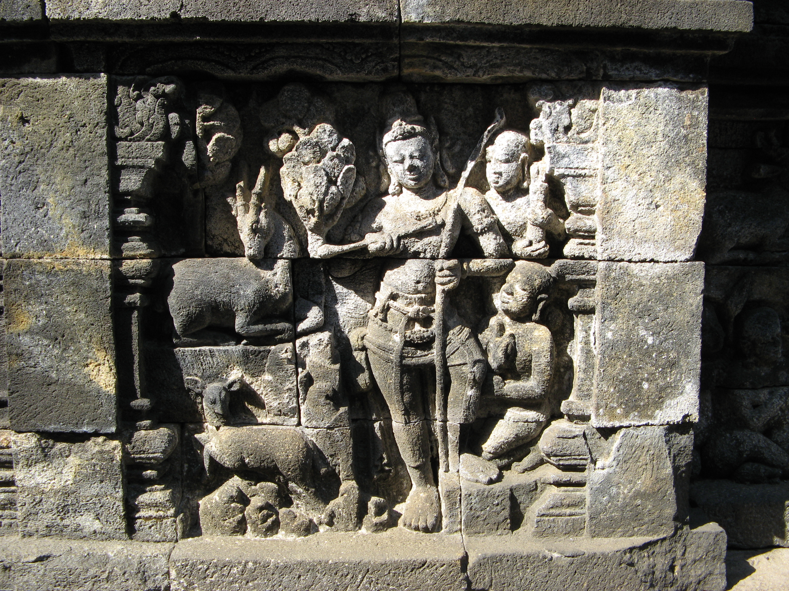
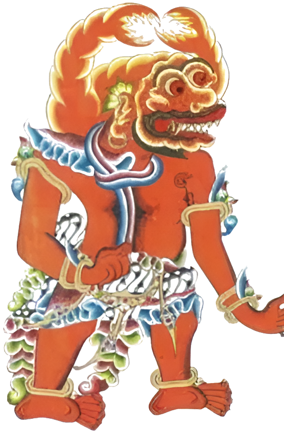

Malam merayap di atas pelataran batu andesit Candi Borobudur. Di bawah kabut hening Pegunungan Menoreh, gerbang timur terkunci rapat oleh tiga gembok bersegel kuno—Kuningan, Besi, dan Perunggu.
Berbekal lentera temaram dan detak jantung yang berpacu di kesunyian candi, telusuri lorong relief abad ke-8, temukan ketiga kunci pusaka yang tercerai-berai, dan hindari bayangan Buto Abang yang mengintai dari kegelapan teras stupa.
Terhubung langsung ke Unity Engine via server lokal (Windows).


Sosok Bayangan Buto Abang“Jangan menatap mata merahnya terlalu lama; suara detak jantung akan semakin menderu saat ia kian mendekat.”
Dapat dimainkan di perangkat komputer (PC) maupun kacamata Virtual Reality (Oculus Quest 2/3).